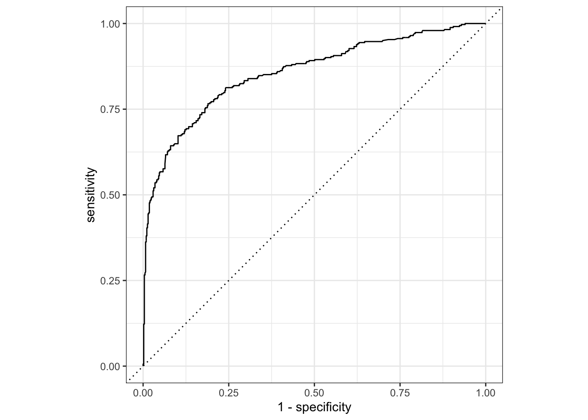

library(tidyverse)
library(readxl)
library(ggrepel)
library(tidymodels)
library(ranger)
library(viridisLite)Webinar 3a - Business Analytics e Data Mining
Previsão de sobrevivientes do Titanic
Carregando os dados
Para este webinar vamos usar dados do Titanic (para os métodos supervisionados a partir de kaggle) e um dataset hipotético sobre clientes (para o método não supervisionado)
Carregando pacotes
Métodos Supervisionados
Para mostrar a utilidade destes modelos, vamos usar um dataset sobre os sobrevivientes do Titanic. Há várias formas de carregar os dados, incluindo o pacote Titanic. Os dados mostram cada um dos passageiros do Titanic, incluindo informações como o nome, a idade, se estavam com filhos, esposos/esposas, em qual categoria de cabine se encontravam, quanto pagaram pela passagem, etc. Mais informações podem ser encontradas em: https://www.kaggle.com/c/titanic/data
titanic <- read.csv("train.csv")
titanic_test <- read.csv("test.csv")Uma vez que os dados os carregados, várias das variáveis devem ser convertidas a fatores.
#titanic$Survived <- factor(titanic$Survived)
titanic$Pclass <- factor(titanic$Pclass)
titanic$Sex <- factor(titanic$Sex)Primeiramente, precisamos limpar os dados. Por exemplo, o PassengerID é um identificador único para os registros de cada passageiro, mas não nos diz nada sobre a sobrevivência ou não. Intuitivamente, as variáveis Name, Cabin, Embarqued e Ticket também não decidirão a sobrevivência, por isso precisamos retirá-los também. Assim, selecionaremos as colunas restantes usando a função select() da biblioteca dplyr:
titanic_df <- titanic %>%
select(-PassengerId,-Name,-Ticket, -Cabin, -Embarked) %>%
rename(Siblings_and_Spouses = SibSp,
Parents_and_Children = Parch)Criar test e train datasets
Podemos usar a função initial_split() do pacote tidymodels.
set.seed <- 2020
#split <- initial_split(titanic_df, strata =Survived)
#titanic_train <- training(split)
#titanic_test <- testing(split)Mas neste caso, o kaggle já nos deu os datasets separados, portanto, o nosso dataset titanic_df é o dataset de treino. Além disso, vamos retirar eventuais observações com NA.
library(skimr)
skim(titanic_df)| Name | titanic_df |
| Number of rows | 891 |
| Number of columns | 7 |
| _______________________ | |
| Column type frequency: | |
| factor | 2 |
| numeric | 5 |
| ________________________ | |
| Group variables | None |
Variable type: factor
| skim_variable | n_missing | complete_rate | ordered | n_unique | top_counts |
|---|---|---|---|---|---|
| Pclass | 0 | 1 | FALSE | 3 | 3: 491, 1: 216, 2: 184 |
| Sex | 0 | 1 | FALSE | 2 | mal: 577, fem: 314 |
Variable type: numeric
| skim_variable | n_missing | complete_rate | mean | sd | p0 | p25 | p50 | p75 | p100 | hist |
|---|---|---|---|---|---|---|---|---|---|---|
| Survived | 0 | 1.0 | 0.38 | 0.49 | 0.00 | 0.00 | 0.00 | 1 | 1.00 | ▇▁▁▁▅ |
| Age | 177 | 0.8 | 29.70 | 14.53 | 0.42 | 20.12 | 28.00 | 38 | 80.00 | ▂▇▅▂▁ |
| Siblings_and_Spouses | 0 | 1.0 | 0.52 | 1.10 | 0.00 | 0.00 | 0.00 | 1 | 8.00 | ▇▁▁▁▁ |
| Parents_and_Children | 0 | 1.0 | 0.38 | 0.81 | 0.00 | 0.00 | 0.00 | 0 | 6.00 | ▇▁▁▁▁ |
| Fare | 0 | 1.0 | 32.20 | 49.69 | 0.00 | 7.91 | 14.45 | 31 | 512.33 | ▇▁▁▁▁ |
titanic_df <- titanic_df %>%
filter(!is.na(Age))
titanic_train <- titanic_dfNesta análise, vamos formular algumas perguntas:
Qual é a relação entre as características e as chances de sobrevivência de um passageiro.
Previsão de sobrevivência para o navio inteiro.
Regressão Linear
Vamos usar primeiramente um modelo linear para fazer a previsão de sobrevivência.
titanic_lm <- lm(Survived~., data=titanic_train)
summary(titanic_lm)
Call:
lm(formula = Survived ~ ., data = titanic_train)
Residuals:
Min 1Q Median 3Q Max
-1.12858 -0.23132 -0.06947 0.23280 0.99556
Coefficients:
Estimate Std. Error t value Pr(>|t|)
(Intercept) 1.1740788 0.0652667 17.989 < 2e-16 ***
Pclass2 -0.1980470 0.0481540 -4.113 4.37e-05 ***
Pclass3 -0.3892163 0.0472077 -8.245 8.07e-16 ***
Sexmale -0.4886489 0.0314332 -15.546 < 2e-16 ***
Age -0.0065370 0.0011327 -5.771 1.18e-08 ***
Siblings_and_Spouses -0.0533662 0.0173869 -3.069 0.00223 **
Parents_and_Children -0.0120393 0.0190338 -0.633 0.52725
Fare 0.0002971 0.0003564 0.834 0.40480
---
Signif. codes: 0 '***' 0.001 '**' 0.01 '*' 0.05 '.' 0.1 ' ' 1
Residual standard error: 0.3824 on 706 degrees of freedom
Multiple R-squared: 0.4006, Adjusted R-squared: 0.3947
F-statistic: 67.41 on 7 and 706 DF, p-value: < 2.2e-16Note que Parents e Fare não são significativos pois os valores p são 0,52725 e 0,4048 respectivamente, ambos maiores a 0,05 de nível de significância.
Porém, o valor de Survived inicia com um intercepto de 1,1740, ou seja, acima do valor de 1 que indicaria sobrevivência.
Vamos calcular a probabilidade de sobrevivência para cada passageiro e plotar um gráfico para reforçar este argumento.
pred_lm <- predict(titanic_lm, data=titanic_train)
titanic_df <- titanic_df %>%
mutate(prob_lm = pred_lm)
titanic_df %>%
ggplot(aes(factor(Survived),prob_lm,
color=factor(Survived)))+
geom_boxplot()+
scale_y_continuous(limits = c(-0.2,1.1),
n.breaks = 12)+
scale_color_brewer(palette = "Dark2")+
theme_minimal()Regressão Logística
Um modelo que responde melhor quando a variável de saída está entre 0 e 1 é o de regressão logística. Podemos ver os resultados do modelo abaixo.
titanic_logistic_model <- glm(Survived~.,
data = titanic_train,
family = "binomial")
summary(titanic_logistic_model)
Call:
glm(formula = Survived ~ ., family = "binomial", data = titanic_train)
Coefficients:
Estimate Std. Error z value Pr(>|z|)
(Intercept) 4.179995 0.503420 8.303 < 2e-16 ***
Pclass2 -1.292538 0.321756 -4.017 5.89e-05 ***
Pclass3 -2.501069 0.338744 -7.383 1.54e-13 ***
Sexmale -2.637451 0.220077 -11.984 < 2e-16 ***
Age -0.044159 0.008264 -5.343 9.12e-08 ***
Siblings_and_Spouses -0.376847 0.127483 -2.956 0.00312 **
Parents_and_Children -0.061268 0.122927 -0.498 0.61820
Fare 0.002043 0.002564 0.797 0.42543
---
Signif. codes: 0 '***' 0.001 '**' 0.01 '*' 0.05 '.' 0.1 ' ' 1
(Dispersion parameter for binomial family taken to be 1)
Null deviance: 964.52 on 713 degrees of freedom
Residual deviance: 635.78 on 706 degrees of freedom
AIC: 651.78
Number of Fisher Scoring iterations: 5Os coeficientes do modelo logístico são difíceis de intepretar. Para variáveis categóricas (fatores), o coeficiente representa o odds ratio entre por exemplo para a variável ‘Sex’, a interpretação é:
\[log(oddsratio)=log(\beta)\] portanto, \[oddsratio=e^{\beta}=e^{-2.6374}=0.07154\] Ou seja, um passageiro homem tinha \(0,07154\) vezes menos chances (odds) de sobrevivência do que uma passageira mulher. Ou em outras palavras uma passageira mulher tinha \(1/0,07154=13.97\) vezes mais chances de sobrevivência.
Nota: \(odds=\frac{p}{1-p}\) , sendo \(p\) a probabilidade de um evento acontecer.
Igualmente, podemos interpretar os coeficientes relacionados com a classe: um passageiro na 2a classe tinha \(e^{-1.292538}=0,2745\) vezes menos chances de sobrevivência do que um passageiro da 1a classe (ou um passageiro de 1a classe tinha \(1/0,2745=3,64\) vezes mais chances de sobrevivência do que um de 2a classe). Já, um passageiro da 3a classe tinha \(e^{-2.501069}=0,0819\) vezes menos chances de sobrevivência do que um passageiro da 1a classe (ou um passageiro de 1a classe tinha \(1/0,0819=12,21\) vezes mais chances de sobrevivência do que um de 3a classe).
Para as variáveis continuas, a interpretação é um pouco mais direta. Por exemplo, para cada adicional de idade, as chances de sobrevivência reduzem em \(e^{-0.0441}=0,9568\) vezes (aproximadamente em 50% de probabilidade).
Observação: Em alguns casos, vale a pena alterar o fator base de uma determinada variável, principalmente quando os níveis do fator possuem um valor de referência. Neste caso pode usar-se a função relevel.
Agora que temos um objeto denominado titanic_logistic_model, podemos prever os valores de sobrevivência (0,1) para o nosso dataset de treino, usando a função predict. Após, mostraremos uma primeira medida de precisão do modelo que é calcular o Pseudo \(R^{2}\):
library(broom)
glance(titanic_logistic_model) %>%
summarize(pR2 = 1 - deviance / null.deviance)# A tibble: 1 × 1
pR2
<dbl>
1 0.341titanic_df <- titanic_df %>%
mutate(prob_log = predict(titanic_logistic_model,
type = "response"))
media <- mean(titanic_train$Survived)titanic_df %>%
ggplot(aes(factor(Survived),prob_log,
color=factor(Survived)))+
geom_boxplot()+
scale_y_continuous(limits = c(-0.2,1.1),
n.breaks = 12)+
scale_color_brewer(palette = "Dark2")+
theme_minimal()A probabilidade média de sobrevivência é 0.41, portanto podemos definir o limiar da previsão como sendo esse valor.
titanic_df$pred_log <- ifelse(titanic_df$prob_log > media, 1, 0)Para calcular a precisão da previsão, podemos comparar as médias.
pred_log <- mean(titanic_df$Survived==titanic_df$pred_log)Desta forma, chegamos ao valor de 79.27 %.
Uma forma mais elegante de verificar a precisão do modelo é usar a Curva ROC e o valor de AUC.
titanic_df$Survived <- factor(titanic_df$Survived, levels=c(1,0))
autoplot(roc_curve(titanic_df, Survived, prob_log))
roc_auc(titanic_df, Survived, prob_log)# A tibble: 1 × 3
.metric .estimator .estimate
<chr> <chr> <dbl>
1 roc_auc binary 0.859Como lidar com dados faltantes
Como vimos anteriormente, o dataset continha um grande número de valores NA na variável Age. No procedimento anterior, simplesmente eliminamos as linhas com NA, ou seja, 177 de um total de 891.
Vamos conhecer um método de inputar valores para esses NA, e ver o efeito que pode dar nosso modelo. Vamos retornar ao dataframe titanic.
# Imputar usando média
titanic_train_age <- titanic %>%
mutate(Age_imputada = ifelse(is.na(Age),
round(mean(Age,na.rm=TRUE),digits = 2),
Age)) %>%
# Criar indicador para saber qual foi imputado e qual não
mutate(faltante_age = ifelse(is.na(Age),1,0)) %>%
select(-PassengerId,-Name,-Ticket, -Cabin, -Embarked) %>%
rename(Siblings_and_Spouses = SibSp,
Parents_and_Children = Parch)Uma vez imputados os valores de idade, podemos calcular novamente o modelo logístico:
titanic_train_age <- titanic_train_age %>%
select(-Age, -faltante_age)
titanic_logistic_model2 <- glm(Survived~.,
data = titanic_train_age, family = "binomial")
summary(titanic_logistic_model2)
Call:
glm(formula = Survived ~ ., family = "binomial", data = titanic_train_age)
Coefficients:
Estimate Std. Error z value Pr(>|z|)
(Intercept) 3.840871 0.446533 8.602 < 2e-16 ***
Pclass2 -1.023118 0.293891 -3.481 0.000499 ***
Pclass3 -2.149863 0.289626 -7.423 1.15e-13 ***
Sexmale -2.760928 0.199254 -13.856 < 2e-16 ***
Siblings_and_Spouses -0.350082 0.109612 -3.194 0.001404 **
Parents_and_Children -0.113337 0.117621 -0.964 0.335258
Fare 0.002991 0.002447 1.223 0.221493
Age_imputada -0.039490 0.007843 -5.035 4.78e-07 ***
---
Signif. codes: 0 '***' 0.001 '**' 0.01 '*' 0.05 '.' 0.1 ' ' 1
(Dispersion parameter for binomial family taken to be 1)
Null deviance: 1186.66 on 890 degrees of freedom
Residual deviance: 788.67 on 883 degrees of freedom
AIC: 804.67
Number of Fisher Scoring iterations: 5O valor do Pseudo R2 para o modelo logístico 2 é:
glance(titanic_logistic_model2) %>% summarize(pR2 = 1-deviance/null.deviance)# A tibble: 1 × 1
pR2
<dbl>
1 0.335e por fim, a curva ROC e o valor de AUC:
titanic_train_age <- titanic_train_age %>%
mutate(prob_log_age = predict(titanic_logistic_model2,
type = "response"))
titanic_train_age$Survived <- factor(titanic_train_age$Survived, levels=c(1,0))
autoplot(roc_curve(titanic_train_age, Survived, prob_log_age))
roc_auc <- roc_auc(titanic_train_age, Survived, prob_log_age)
roc_auc# A tibble: 1 × 3
.metric .estimator .estimate
<chr> <chr> <dbl>
1 roc_auc binary 0.856library(WVPlots)
GainCurvePlot(titanic_train_age, "prob_log_age","Survived","Curva de Ganho")E a área abaixo da curva (AUC) é roc_auc, binary, 0.8560088. Mais sobre ROC, GainCurve e Matriz de Confusão podem ser encontradas em: https://community.tibco.com/wiki/gains-vs-roc-curves-do-you-understand-difference
Árvores de Decisão
Usaremos o dataframe titanic_train.
library(rpart)
library(rpart.plot)
titanic_tree_model <- rpart(Survived~.,
data = titanic_train,
method = "class",
control = rpart.control(cp = 0))
# Plot the loan_model with default settings
rpart.plot(titanic_tree_model)rpart.plot(titanic_tree_model, type = 3, box.palette = c("#f16727", "#1a954d"), fallen.leaves = TRUE)
Agora que a árvore de decisão foi criada, podemos verificar a sua precisão comparando as previsões com a coluna Survived.
pred_tree <- predict(titanic_tree_model, titanic_train,
type = "class")
caret::confusionMatrix(as.factor(pred_tree),as.factor(titanic_train$Survived))Confusion Matrix and Statistics
Reference
Prediction 0 1
0 391 69
1 33 221
Accuracy : 0.8571
95% CI : (0.8293, 0.882)
No Information Rate : 0.5938
P-Value [Acc > NIR] : < 2.2e-16
Kappa : 0.6979
Mcnemar's Test P-Value : 0.0005292
Sensitivity : 0.9222
Specificity : 0.7621
Pos Pred Value : 0.8500
Neg Pred Value : 0.8701
Prevalence : 0.5938
Detection Rate : 0.5476
Detection Prevalence : 0.6443
Balanced Accuracy : 0.8421
'Positive' Class : 0
titanic_df <- titanic_df %>%
mutate(pred_tree=pred_tree)
titanic_df$pred_tree <- factor(titanic_df$pred_tree, levels = c(1,0))
titanic_df %>%
conf_mat(Survived, pred_tree) Truth
Prediction 1 0
1 221 33
0 69 391Vamos calcular a curva ROC, AUC e GainCurve para o modelo de Árvore:
titanic_df$pred_tree <- as.character(titanic_df$pred_tree)
titanic_df$pred_tree <- as.numeric(titanic_df$pred_tree)
#autoplot(roc_curve(titanic_df, truth = Survived, estimate = pred_tree))
#roc_auc(titanic_df, truth = Survived, estimate = pred_tree)
GainCurvePlot(titanic_df, "pred_tree","Survived","Gain Curve para o Modelo Arvore de Decisão")Random Forest
Para construir o modelo RF, é necessário eliminar os NAs que aparecem na variável Age. Como nosso dataset não tem mais NAs, podemos continuar com a previsão.
titanic_rf_model <- ranger(Survived~., # formula
titanic_train, # data
num.trees = 500,
respect.unordered.factors = "order",
seed = set.seed,
classification = TRUE)Agora sim, podemos usar o modelo para fazer as previsões usando predict
pred_rf <- predict(titanic_rf_model, titanic_train)$predictions
titanic_rf_modelRanger result
Call:
ranger(Survived ~ ., titanic_train, num.trees = 500, respect.unordered.factors = "order", seed = set.seed, classification = TRUE)
Type: Classification
Number of trees: 500
Sample size: 714
Number of independent variables: 6
Mtry: 2
Target node size: 1
Variable importance mode: none
Splitrule: gini
OOB prediction error: 17.79 % titanic_df <- titanic_df %>%
mutate(pred_rf = pred_rf)A curva ROC, o AUC:
#autoplot(roc_curve(titanic_df, truth = Survived, estimate = pred_rf))
#roc_auc(titanic_df, truth = Survived, estimate = pred_rf)E a Matriz de confusão para o modelo de Random Forest é:
titanic_df$pred_rf <- factor(titanic_df$pred_rf, levels = c(1,0))
titanic_df %>%
conf_mat(Survived, pred_rf) Truth
Prediction 1 0
1 244 14
0 46 410